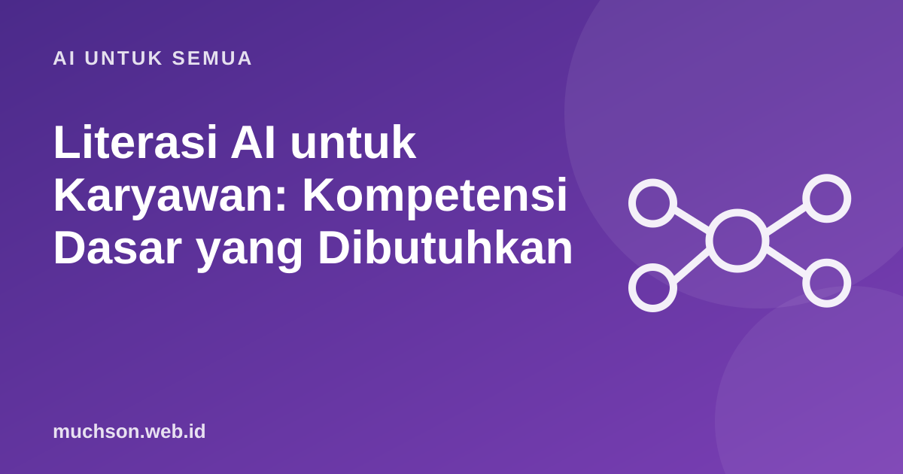

Beranda › Artikel › AI untuk Semua
AI untuk SemuaLiterasi AI untuk Karyawan: Kompetensi Dasar yang Dibutuhkan
Banyak karyawan sudah memakai AI setiap hari, sebagian tanpa sepengetahuan perusahaan dan tanpa memahami risikonya. Uni Eropa bahkan memasukkan literasi AI ke dalam undang-undang: sejak 2 Februari 2025, Pasal 4 EU AI Act meminta penyedia dan pengguna sistem AI memperhatikan literasi AI staf mereka. Apa sebenarnya yang perlu dikuasai?

Literasi AI bukan berarti bisa membuat model
Literasi AI adalah kemampuan memahami apa yang bisa dan tidak bisa dilakukan AI, memakainya secara efektif dan aman, serta menilai hasilnya secara kritis sesuai peran masing-masing. Staf administrasi, manajer, dan developer membutuhkan tingkat yang berbeda.
Tentang EU AI Act Pasal 4
Versi awal Pasal 4 (berlaku sejak 2 Februari 2025) meminta penyedia dan pengguna (deployer) sistem AI mengambil langkah agar staf memiliki literasi AI yang memadai, disesuaikan dengan pengetahuan, pengalaman, dan konteks pemakaian. Paket Digital Omnibus (Regulation (EU) 2026/1744, berlaku sejak akhir Juli 2026) kemudian melunakkan rumusannya: organisasi diminta mengambil langkah untuk mendukung pengembangan literasi AI, tanpa harus menjamin tingkat tertentu bagi setiap individu, sementara Komisi dan negara anggota membantu terutama UKM.
Bagi perusahaan Indonesia, ini relevan bila melayani pasar atau klien di Uni Eropa, dan menjadi acuan praktik baik bagi yang lain. Terlepas dari rumusan hukumnya, karyawan yang paham risiko AI tetap mengurangi kesalahan dan kebocoran data.
Ringkasan ini bukan nasihat hukum. Untuk kewajiban perusahaan Anda, konsultasikan dengan penasihat hukum yang memahami regulasi terkait.
Delapan kompetensi dasar untuk semua karyawan
Contoh program pelatihan 4 minggu
Mengukur hasil, bukan kehadiran
- Sebelum dan sesudah: tes praktik singkat, misalnya memeriksa ringkasan AI yang mengandung tiga kesalahan.
- Perilaku kerja: berapa alur kerja yang diperbaiki dan berapa waktu yang dihemat.
- Insiden: jumlah kebocoran data atau kesalahan akibat AI yang dilaporkan.
- Dokumentasi: catatan pelatihan per karyawan untuk kebutuhan kepatuhan.
Tanya jawab
Apakah perusahaan kecil perlu program literasi AI?
Apakah Indonesia punya aturan serupa?
Siapa yang sebaiknya melatih?
Sumber dan bacaan lanjut
- EU AI Act, Article 4: AI literacy
- European Commission: AI Literacy, Questions and Answers
- Regulation (EU) 2026/1744 (Digital Omnibus on AI): ringkasan
- Privasi data saat memakai chatbot AI (artikel terkait)